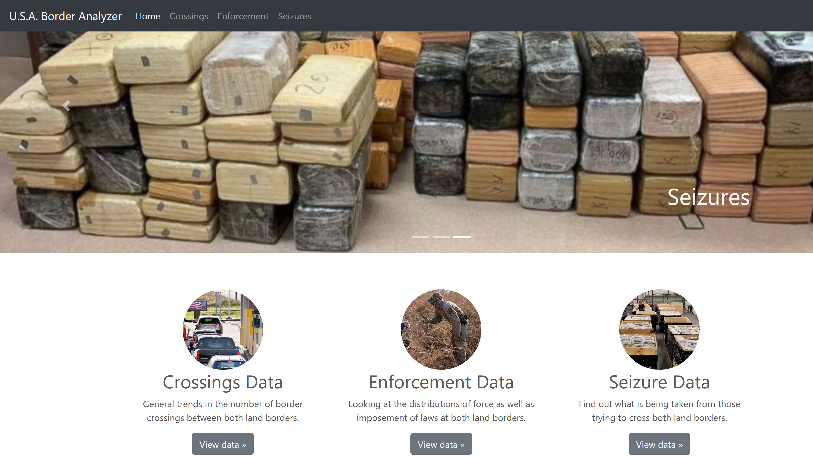

Drug Seizures Analysis
Description: A research project meant to produce valuable visualizations on border patrol encounters, focused on drug seizure data. Using Python's Plotly library, a partner and I processed CSV and JSON files to collect usable data. The visualizations we created were then embedded into a very basic webpage that was made with bootstrapr.io, a tool made by Notre Dame's Randy Harrison.
Results: Creating the page and searching for the data taught me some research skills centered on finding official and presentable data. Along with basic data handling in Python with the CSV and JSON libraries, I was introduced to basic web design. Overall, my partner and I were able to produce valuable graphs about violent and nonviolent border encounters, number of border crossings, and amount of drugs seized across a few years.
